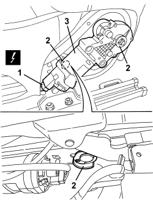

7045J34 FRONT SEAT BACKREST ANGLE MOTOR, LEFT OR RIGHT - R.R. FOLLOWING ELECTRICAL WIRING CHECK
- Path
- Procedures > 70 FITTINGS > 7045 FRONT SEATS > 7045J FRONT SEAT ELECTRIC MOVEMENTS > 7045J34 FRONT SEAT BACKREST ANGLE MOTOR, LEFT OR RIGHT - R.R. FOLLOWING ELECTRICAL WIRING CHECK
- Kind
- repair procedure (removal / refitting; the operation number is the code)
- Applies to
- all engines; all production periods; only with equipment: Electric seats
- Interactive page
- https://sloeber94.github.io/elrnDB/alfa/159/en/#/939005563
Applies to: all engines; all production periods; only with equipment: Electric seats
 Removing
Removing
 Refitting
RefittingOp. 7045A10 FRONT SEAT (ONE), LEFT OR RIGHT - R.R.
Op. 7045A43 FRONT SEAT EXTERIOR GUARD (ONE), LEFT OR RIGHT - R.R
1. Disconnect the electrical connection.
Description | Component |
|---|---|
DRIVER'S SEAT BACKREST ADJUSTMENT MOTOR | |
PASSENGER SEAT BACKREST ADJUSTMENT MOTOR |
2. Undo the retainers.
3. Remove the motor.

Applies to: all engines; all production periods; only with equipment: Electric seats
Refitting
Removing- Check that the motor is not damaged.
- Position the motor.
- Do up the retainers.
- Connect the electrical connection.
Op. 7045A43 FRONT SEAT EXTERIOR GUARD (ONE), LEFT OR RIGHT - R.R
Topics linked from this page (4)
- 7045A10 FRONT SEAT (ONE), LEFT OR RIGHT - R.R.
- 7045A43 FRONT SEAT EXTERIOR GUARD (ONE), LEFT OR RIGHT - R.R
- N132 DRIVER'S SEAT BACKREST ADJUSTMENT MOTOR
- N135 PASSENGER SEAT BACKREST ADJUSTMENT MOTOR